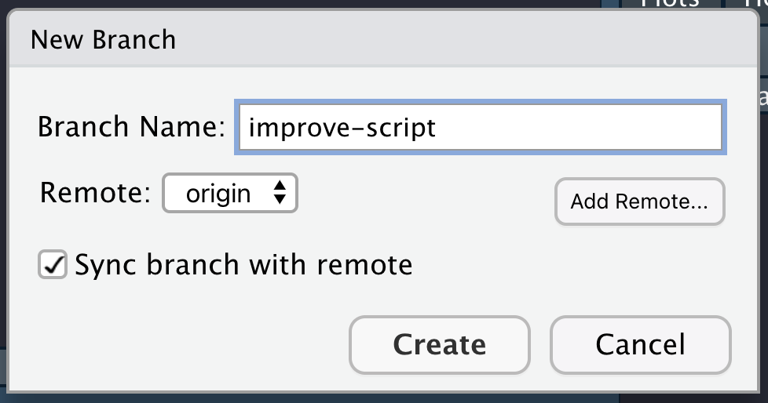
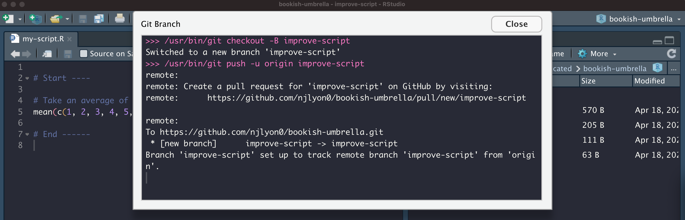
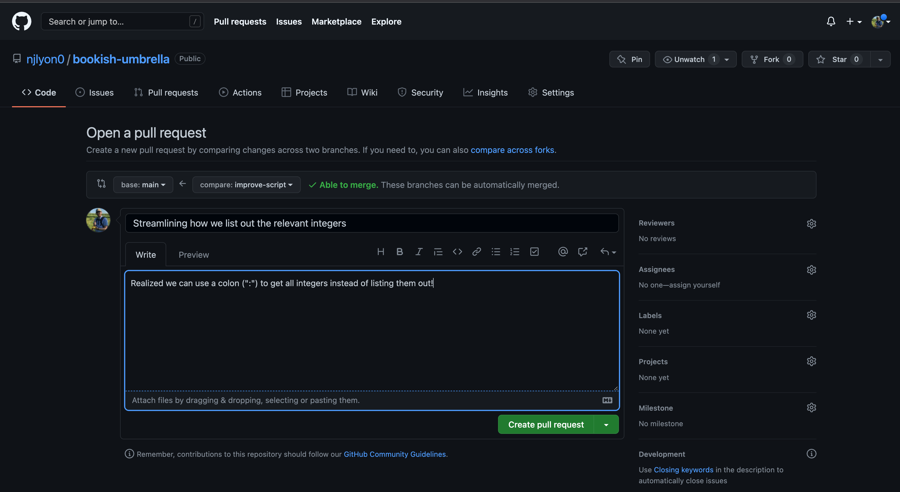
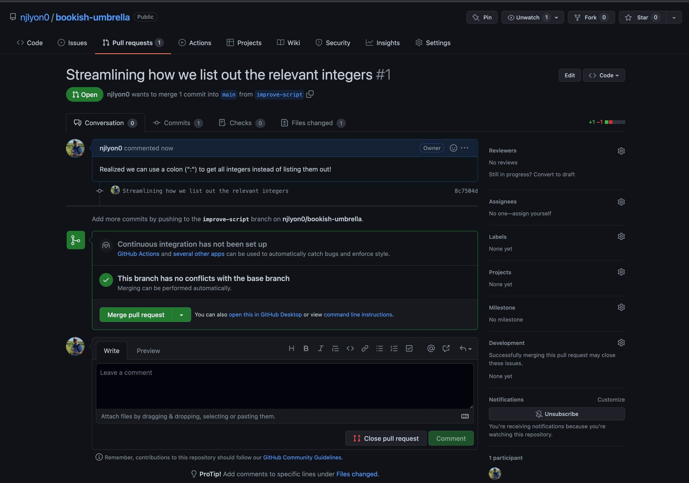
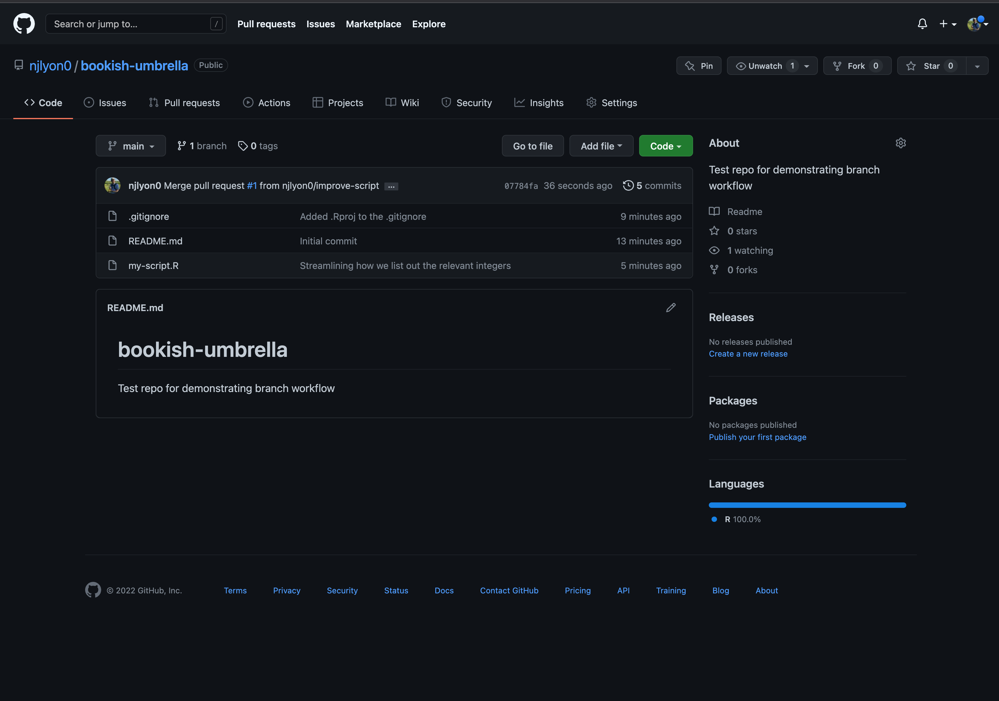
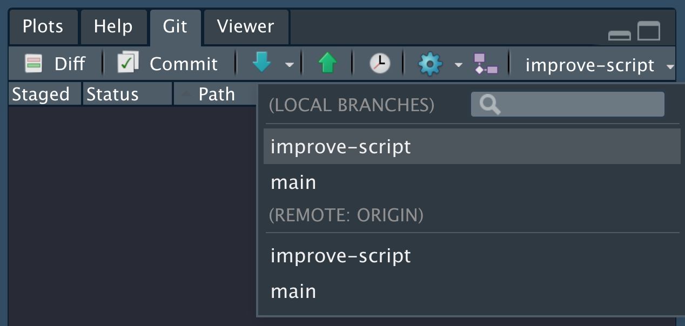
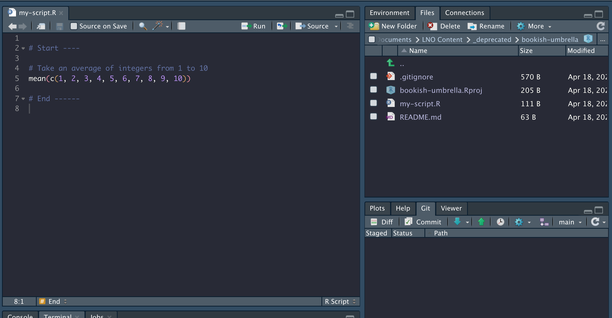
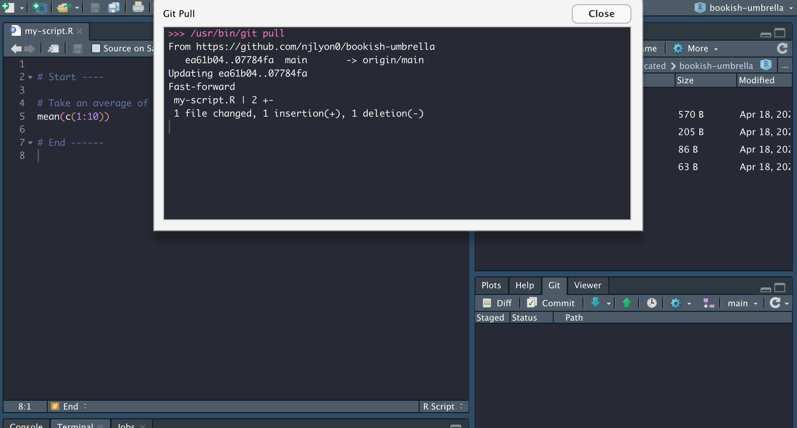

Branches
What is a Branch?

A branch is essentially a working environment in your git repository that is separate from your main working area. This can be incredibly useful when you have a task to work on but you don’t want to risk damaging the version of your code that already works. Note that “branch” can be either a noun or a verb as with many of the git vocabulary words discussed earlier (e.g., “commit”, “push”, etc.).
Branches are typically created with the intent to put the work in the branch back into the main branch when you are done with it. Implicit in that rationale is the fact that most branches are created with a specific task/sub-task in mind and known to be temporary from the outset.
As an example, imagine that you want to put a better engine in your car but you don’t want to risk damaging your car as you go about that job. In git terms you could create a branch to work on those mechanical improvements while at the same time preserving your original car separately (in the “main” branch). When you’re done experimenting and happy with the new version of your car, you can merge the two cars keeping all of the improvements you made in your branch.
Even if you think you’ve never worked with git branches you actually have! All git repositories actually start in a branch named “main” so even if you’ve never intentionally created a branch, you’ve been working in your “main” branch all along.
Brief Overview of Branch Workflow
Before diving into the specifics of how to use branches while working with git, let’s take a look at a general overview of that process.
As with many other git operations, the first thing to do is pull from GitHub to your local repository to ensure that you’re working with the most up-to-date version of everything in the repo (see Step 1 below).
Once that is done, you can create a branch on your local machine (automatically shifting your RStudio project into that new branch). Doing this on your machine also updates GitHub to show that there are multiple branches (see Step 2 below).
Once you have created a branch you can work in it locally (and via GitHub directly) as you would normally. You can edit your files locally, commit those changes, pull from GitHub (within the branch), and push to GitHub (see Steps 3-4 below).
When you are done working with the branch (i.e., you’ve finished the task for which you created the branch), you can use GitHub to merge your branch with the main one (see Step 5 below). This puts all of the content in your branch into the main one now (which puts your local version of the “main” branch behind!).
Once the two branches are merged on GitHub, go back to your local computer, manually change the branch to the main branch and pull (see Step 7 below). This updates your local version of the main branch and avoids future problems.
Given that most branches are not used again after they are merged, it is often a good housekeeping step to then delete your branch on GitHub and locally once you have successfully merged the pull request (see Steps 6 & 8 below). Note that in the below diagram step 6 and 8 occur on either side of step 7 but in truth they can both come after depending on your preference.
However, deletion of the branch either locally or via GitHub must come after step 5!
As you can see from the above text and the below diagram, branches have a few more moving parts than the git and GitHub operations we’ve discussed so far. That said, they can be a powerful tool in service of collaborative work because you can have multiple branches active at the same all working on separate tasks. This approach can be an easy (or at least easier) workflow for working together while avoiding conflicts (again, see “Appendix A: Conflicts”).

Now we’ve gone over this big picture overview, let’s walk step-by-step through creating, working in and ultimately merging branches!
Create a Branch
Before you create a branch, pull from GitHub as a precaution so that you are certain your local repository has the most up-to-date content.
That done, click the purple button in the Git tab of RStudio that shows two rectangles connected by a diamond at right-angles from one another.

In the resulting dialogue box, give your new branch an informative name. In this example we haven’t given our new branch a great name but in a “real” repository you will greatly appreciate having concise but descriptive branch names.
Once you’re happy with the name, click “Create” (you can ignore the other options and buttons on this dialogue box).

This will create a confirmation message that is superficially similar to the format of messages returned by other git actions.

You will also notice that in your Git tab where previously it said “main” it now shows whatever name you chose for your branch.

Work in the Branch
You can now work in a branch in the same way that you work with GitHub via RStudio when you are not using branches.
- Make edits
- Commit changes locally
- Pull from GitHub to reduce the chances of a conflict
- Push your committed changes to GitHub
The reason you use the same workflow is–as previously stated–even if you don’t typically use branches, all work in git is functionally done in the “main” branch of your repository.
For a more in-depth review of the RStudio-GitHub workflow, see Chapter 3: Using GitHub via Rstudio
Closing a Branch
Once you’ve completely finished working in your branch, push your work (if your local files are ahead of the GitHub versions) and go to your repository’s GitHub page.
On that page GitHub will helpfully have created a button at the top of the screen notifying you that your branch had recent pushes and will offer a green button to “Compare & pull request”.
Click that button.

You will then be prompted to write a title and message for your pull request to give some broader context for what the branch does. This is especially valuable if you are not the one reviewing pull requests as this can help someone quickly familiarize themselves with what you have done.
Once you’re satisfied with your title and message, click the green “Create pull request” button.

That done, GitHub will send you to a page that looks very much like a Github issue (see the chapter on issues). At the top is whatever title and message you just wrote when opening the pull request following by a list of all of the commits in that branch.
Those commits are “live” and function as hyperlinks in case you want to view how your code is preserved in GitHub.
Note also that if you realize you forgot to do something in your branch (or if someone asks you change something) you can return to RStudio and commit/pull/push and it will automatically update on the pull request. Pull requests are for merging a whole branch, not for merging just a part of the work in the branch.
You or your team can post messages on a pull request as needed (see the text box at the bottom of the below picture).
If you are ready to merge a pull request from your branch into the “main” branch click the intuitively-named green “Merge pull request” button.

GitHub will open another text box where you can add a commit message to your acceptance of the pull request. If whoever opened the pull request was sufficiently detailed in their opening comment(s) this may not need to be terribly detailed but it can’t hurt!
Once your message is written, click the green “Confirm merge” button.

The green ‘open’ buttons will change to purple and will use the “merge” icon of two streams combining. As with GitHub issues you can continue to post comments on a merged pull request if you feel it will be valuable for posterity to do so.
GitHub will also handily create a “Delete branch” button at the bottom of the pull request’s timeline. We recommend that you click it given that your branch’s purpose is served and having irrelevant branches clutters your GitHub and may even cause problems if you have two similarly-named branches where one has been merged and the other has not.

After you click “Delete branch” it will be replaced by a “Restore branch” button so you could always reclaim it if need be.

Finally, return to the “Code” tab of your GitHub repository and you can see that the changes we implemented in the branch are now part of the repository’s “main” branch. The branch name is displayed just above the last commit message and the first file in the repository but below the different tab names.

Update Local Repository
Now that GitHub has been told to integrate your branch content with the “main” branch, you need to let RStudio know that integration has taken place!
First, click the name of the branch to see all the branch names in your repository and select the “main” branch to flip your local repository over to that branch.

Notice though that our script went back to the pre-merge version but don’t panic!
In order to update your local version of the repository all that you need to do is click the pull button. This brings the content you just merged via GitHub (see above) into your local repository.

You will get a success message indicating the changes to each file in the same way any other pull would. You can notice between this picture and the previous that the code automatically changes when the pull is complete.

Now that you merged your branch with the main branch on GitHub and pulled that merged content down to your local version you have successfully start-to-finish used branches in your workflow.
Many branches can exist at the same time and sometimes it helpful to create a branch starting from another branch, but these special cases obey the same basic structure described above and are outside the scope of this primer.
That said, we recommend branches as one way to avoid conflicts when you and your collaborators want to work simultaneously in the same repository on different scripts!